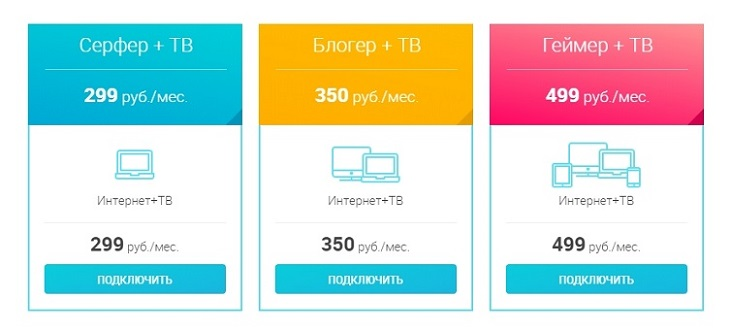

TOMTEL

Компания TOMTEL специализируется на предоставлении услуг кабельного телевидения и широкополосного доступа в Интернет.
ИНТЕРНЕТ.
Подключение абонентов к сети Интернет производится по технологии «оптический кабель в дом» с использование управляемого FastEthernet оборудования последнего поколения. Такие сети обладают большой надежностью и высокой скоростью передачи данных. Тарифы на Интернет – это безлимитный внешний трафик до 100 Мбит/с по доступной цене.
КАБЕЛЬНОЕ ТВ.
Кабельное телевидение от TOMTEL – это большое количество каналов различных тематик и направлений.
Тарифы доступные для подключения на данный момент:
